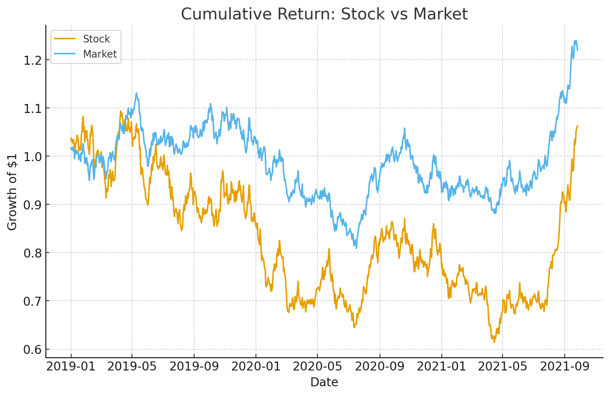
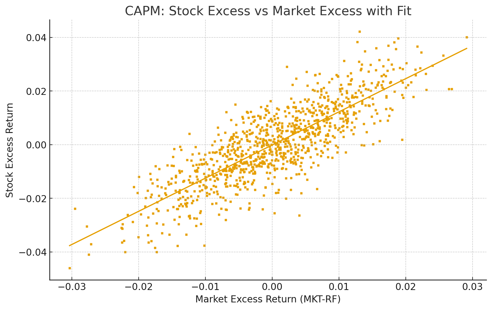

Runs CAPM & multi-factor regressions; interprets alpha/beta and residuals; compares sectors and time windows.
Shows how factor exposure explains performance.
Describe the data source here (tickers, frequency, date range).
Summarize metrics (Sharpe, CAGR, MaxDD). Add charts below.
See snippet.py (replace with your real snippet)assets/img/projects/09-main.png with your thumbnail.assets/img/projects/09-chart.png with your plot/equity curve.snippet.py with a working minimal example.report.pdf to this folder and link it above.